This Chapter describes various utility programs included with the MNE software. Each utility documentation consists of a brief description of the purpose followed by the specification of command-line options.
The utility mne_list_versions lists version numbers and compilation dates of all software modules that provide this information. This administration utility is located in $MNE_ROOT/bin/admin , The output from mne_list_versions or output of individual modules with --version option is useful when bugs are reported to the developers of MNE software.
Using the utility mne_show_fiff it is possible to display information about the contents of a fif file to the standard output. The command line options for mne_show_fiff are:
—version
Show the program version and compilation date.
—help
List the command-line options.
—in <*name*>
Specifies the fif file whose contents will be listed.
—verbose
Produce a verbose output. The data of most tags is included in the output. This excludes matrices and vectors. Only the first 80 characters of strings are listed unless the --long option is present.
—blocks
Only list the blocks (the tree structure) of the file. The tags within each block are not listed.
—indent <*number*>
Number of spaces for indentation for each deeper level in the tree structure of the fif files. The default indentation is 3 spaces in terse and no spaces in verbose listing mode.
—long
List all data from string tags instead of the first 80 characters. This options has no effect unless the --verbose option is also present.
—tag <*number*>
List only tags of this kind. Multiple --tag options can be specified to list several different kinds of data.
mne_show_fiff reads the explanations of tag kinds, block kinds, and units from $MNE_ROOT/share/mne/fiff_explanations.txt .
This section contains utilities which can be used to add information or fix existing information in MEG/EEG data fif files. Unless otherwise noted these utilities can be applied to both raw and evoked data files.
This utility adds or replaces information about unusable (bad) channels. The command line options are:
—version
Show the program version and compilation date.
—help
List the command-line options.
—bad <*filename*>
Specify a text file containing the names of the bad channels, one channel name per line. The names of the channels in this file must match those in the data file exactly. If this option is missing, the bad channel information is cleared.
** <data file name>**
The remaining arguments are taken as data file names to be modified.
Some earlier versions of the Neuromag acquisition software had a problem with the encoding of the eighth bit on the digital stimulus channel STI 014. This problem has been now fixed. Old data files can be fixed with mne_fix_stim14 , which takes raw data file names as arguments. mne_fix_stim14 also changes the calibration of STI 014 to unity. If the encoding of STI 014 is already correct, running mne_fix_stim14 will not have any effect on the raw data.
In newer Neuromag Vectorview systems with 16-bit digital inputs the upper two bytes of the samples may be incorrectly set when stimulus input 16 is used and the data are acquired in the 32-bit mode. This problem can be fixed by running mne_fix_stim14 on a raw data file with the --32 option:
mne_fix_stim14 --32 <raw data file>
In this case, the correction will be applied to the stimulus channels ‘STI101’ and ‘STI201’.
Some versions of the Neuromag acquisition software did not copy the EEG channel location information properly from the Polhemus digitizer information data block to the EEG channel information records if the number of EEG channels exceeds 60. The purpose of mne_check_eeg_locations is to detect this problem and fix it, if requested. The command-line options are:
—version
Show the program version and compilation date.
—help
List the command-line options.
—file <*name*>
Specify the measurement data file to be checked or modified.
—dig <*name*>
Name of the file containing the Polhemus digitizer information. Default is the data file name.
—fix
By default mne_check_eeg_locations only checks for missing EEG locations (locations close to the origin). With –fix mne_check_eeg_locations reads the Polhemus data from the specified file and copies the EEG electrode location information to the channel information records in the measurement file. There is no harm running mne_check_eeg_locations on a data file even if the EEG channel locations were correct in the first place.
The purpose of mne_fix_mag_coil_types is to change coil type 3022 to 3024 in the MEG channel definition records in the data files specified on the command line.
As shown in Tables 5.2 and 5.3, the Neuromag Vectorview systems can contain magnetometers with two different coil sizes (coil types 3022 and 3023 vs. 3024). The systems incorporating coils of type 3024 were introduced last. At some sites the data files have still defined the magnetometers to be of type 3022 to ensure compatibility with older versions of Neuromag software. In the MNE software as well as in the present version of Neuromag software coil type 3024 is fully supported. Therefore, it is now safe to upgrade the data files to use the true coil type.
If the --magnes option is specified, the 4D Magnes magnetometer coil type (4001) is changed to 4D Magnes gradiometer coil type (4002). Use this option always and only if your Magnes data comes from a system with axial gradiometers instead of magnetometers. The fif converter included with the Magnes system does not assign the gradiometer coil type correctly.
Note
The effect of the difference between the coil sizes of magnetometer types 3022 and 3024 on the current estimates computed by the MNE software is very small. Therefore the use of mne_fix_mag_coil_types is not mandatory.
Sometimes it is necessary to change the names types of channels in MEG/EEG data files. Such situations include:
The utility mne_rename_channels was designed to meet the above needs. It recognizes the following command-line options:
—version
Show the program version and compilation date.
—help
List the command-line options.
—fif <*name*>
Specifies the name of the data file to modify.
—alias <*name*>
Specifies the text file which contains the modifications to be applied, see below.
—revert
Reverse the roles of old and new channel names in the alias file.
Each line in the alias file contains the old name and new name for a channel, separated by a colon. The old name is a name of one of the channels presently in the file and the new name is the name to be assigned to it. The old name must match an existing channel name in the file exactly. The new name may be followed by another colon and a number which is the channel type to be assigned to this channel. The channel type options are listed in Channel types..
| Channel type | Corresponding number |
|---|---|
| MEG | 1 |
| MCG | 201 |
| EEG | 2 |
| EOG | 202 |
| EMG | 302 |
| ECG | 402 |
| MISC | 502 |
| STIM | 3 |
Warning
Do not attempt to designate MEG channels to EEG channels or vice versa. This may result in strange errors during source estimation.
Note
You might consider renaming the EEG channels with descriptive labels related to the standard 10-20 system. This allows you to use standard EEG channel names when defining derivations, see Creating a derivation file and Load derivations, as well as in the channel selection files used in mne_browse_raw , see Selection.
The utility mne_add_triggers modifies the digital trigger channel (STI 014) in raw data files to include additional transitions. Since the raw data file is modified, it is possible to make irreversible changes. Use this utility with caution. It is recommended that you never run mne_add_triggers on an original raw data file.
mne_add_triggers accepts the following command-line options:
—version
Show the program version and compilation date.
—help
List the command-line options.
—raw <*name*>
Specifies the raw data file to be modified.
—trg <*name*>
Specifies the trigger line modification list. This text file should contain two entries per line: the sample number and the trigger number to be added into the file. The number of the first sample in the file is zero. It is recommended that trigger numbers whose binary equivalent has lower eight bits equal to zero are used to avoid conflicts with the ordinary triggers occurring in the file.
—delete
Delete the triggers defined by the trigger file instead of adding them. This enables changing the file to its original state, provided that the trigger file is preserved.
Note
Since mne_browse_raw and mne_process_raw can employ an event file which effectively adds new trigger instants, mne_add_triggers is for the most part obsolete but it has been retained in the MNE software suite for backward compatibility.
Depending no the settings during acquisition in the Elekta-Neuromag EEG/MEG systems the data files may contain subject identifying information in unencrypted form. The utility mne_anonymize was written to clear tags containing such information from a fif file. Specifically, this utility removes the following tags from the fif file:
| Tag | Description |
|---|---|
| FIFF_SUBJ_FIRST_NAME | First name of the subject |
| FIFF_SUBJ_MIDDLE_NAME | Middle name of the subject |
| FIFF_SUBJ_LAST_NAME | Last name of the subject |
| FIFF_SUBJ_BIRTH_DAY | Birthday of the subject (Julian day number) |
| FIFF_SUBJ_SEX | The sex of the subject |
| FIFF_SUBJ_HAND | Handedness of the subject |
| FIFF_SUBJ_WEIGHT | Weight of the subject in kg |
| FIFF_SUBJ_HEIGHT | Height of the subject in m |
| FIFF_SUBJ_COMMENT | Comment about the subject |
Note
mne_anonymize normally keeps the FIFF_SUBJ_HIS_ID tag which can be used to identify the subjects uniquely after the information listed in Tags cleared by mne_anonymize . have been removed. If the --his option is specified on the command line, the FIFF_SUBJ_HIS_ID tag will be removed as well. The data of the tags listed in Tags cleared by mne_anonymize . and the optional FIFF_SUBJ_HIS_ID tag are overwritten with zeros and the space claimed by omitting these tags is added to the free space list of the file. Therefore, after mne_anonymize has processed a data file there is no way to recover the removed information. Use this utility with caution.
mne_anonymize recognizes the following command-line options:
—version
Show the program version and compilation date.
—help
List the command-line options.
—his
Remove the FIFF_SUBJ_HIS_ID tag as well, see above.
—file <*name*>
Specifies the name of the file to be modified.
Note
You need write permission to the file to be processed.
In order for the inverse operator calculation to work correctly with data processed with the Elekta-Neuromag Maxfilter (TM) software, the so-called processing history block must be included in data files. Previous versions of the MNE Matlab functions did not copy processing history to files saved. As of March 30, 2009, the Matlab toolbox routines fiff_start_writing_raw and fiff_write_evoked have been enchanced to include these data to the output file as appropriate. If you have older raw data files created in Matlab from input which has been processed Maxfilter, it is necessary to copy the processing history block from the original to modified raw data file using the mne_copy_processing_history utility described below. The raw data processing programs mne_browse_raw and mne_process_raw have handled copying of the processing history since revision 2.5 of the MNE software.
mne_copy_processing_history is simple to use:
mne_copy_processing_history --from <from> --to <to> ,
where <from> is an original raw data file containing the processing history and <to> is a file output with older MNE Matlab routines. Be careful: this operation cannot be undone. If the <from> file does not have the processing history block or the <to> file already has it, the destination file remains unchanged.
In mne_browse_raw , channel derivations are defined as linear combinations of real channels existing in the data files. The utility mne_make_derivations reads derivation data from a suitably formatted text file and produces a fif file containing the weights of derived channels as a sparse matrix. Two input file formats are accepted:
Both of these formats are described in
mne_make_derivations recognizes the following command-line options:
—version
Show the program version and compilation date.
—help
List the command-line options.
—in <*name*>
Specifies a measurement file which contains the EEG electrode locations. This file is not modified.
—inmat <*name*>
Specifies the output file where the layout is stored. Suffix .lout is recommended for layout files. mne_analyze and mne_browse_raw look for the custom layout files from the directory $HOME/.mne/lout .
—trans
Indicates that the file specified with the --inmat option contains a transpose of the derivation matrix.
—thresh <*value*>
Specifies the threshold between values to be considered zero and non-zero in the input file specified with the --inmat option. The default threshold is.
—out <*name*>
Specifies output fif file to contain the derivation data. The recommended name of the derivation file has the format <> -deriv.fif .
—list <*name*>
List the contents of a derivation file to standard output. If this option is missing and --out is specified, the content of the output file will be listed once it is complete. If neither --list nor --out is present, and --in or --inmat is specified, the interpreted contents of the input file is listed.
All lines in the input files starting with the pound sign (#) are considered to be comments. The format of a derivation in a arithmetic input file is:
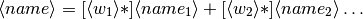
where <> is the
name of the derived channel, 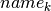 are
the names of the channels comprising the derivation, and  are
their weights. Note that spaces are necessary between the items.
Channel names containing spaces must be put in quotes. For example,
are
their weights. Note that spaces are necessary between the items.
Channel names containing spaces must be put in quotes. For example,
EEG-diff = "EEG 003" - "EEG 002"
defines a channel EEG-diff which is a difference between EEG 003 and EEG 002 . Similarly,
EEG-der = 3 * "EEG 010" - 2 * "EEG 002"
defines a channel which is three times EEG 010 minus two times EEG 002 .
The format of a matrix derivation file is:

The combination of the two arithmetic examples, above can be thus represented as:
2 3 "EEG 002" "EEG 003" "EEG 010" EEG-diff -1 1 0 EEG-der -2 0 3
Before a derivation is accepted to use by mne_browse_raw , the following criteria have to be met:
The validity check is done when a derivation file is loaded into mne_browse_raw , see Load derivations.
Note
You might consider renaming the EEG channels with descriptive labels related to the standard 10-20 system using the mne_rename_channels utility, see Modifying channel names and types: mne_rename_channels. This allows you to use standard EEG channel names in the derivations you define as well as in the channel selection files used in mne_browse_raw , see Selection.
Both MNE software (mne_analyze and mne_browse_raw) and Neuromag software (xplotter and xfit) employ text layout files to create topographical displays of MEG and EEG data. While the MEG channel layout is fixed, the EEG layout varies from experiment to experiment, depending on the number of electrodes used and the electrode cap configuration. The utility mne_make_eeg_layout was created to produce custom EEG layout files based on the EEG electrode location information included in the channel description records.
mne_make_eeg_layout uses azimuthal equidistant projection to map the EEG channel locations onto a plane. The mapping consists of the following steps:
 , 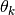, and
, 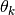, and  )
corresponding to each translated electrode location are computed.
)
corresponding to each translated electrode location are computed. and
and  are
computed. By default,
are
computed. By default,  , i.e. at
the equator (
, i.e. at
the equator ( ) the multiplier is
20. This projection radius can be adjusted with the --prad option.
Increasing or decreasing
) the multiplier is
20. This projection radius can be adjusted with the --prad option.
Increasing or decreasing  makes
the spacing between the channel viewports larger or smaller, respectively.
makes
the spacing between the channel viewports larger or smaller, respectively.The command-line options are:
—version
Show the program version and compilation date.
—help
List the command-line options.
—lout <*name*>
Specifies the name of the layout file to be output.
—nofit
Do not fit a sphere to the electrode locations but use a standard sphere center (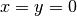, andmm) instead.
—prad <*value*>
Specifies a non-standard projection radius
—width <*value*>
Specifies the width of the viewports. Default value = 5.
—height <*value*>
Specifies the height of the viewports. Default value = 4.
The utility mne_add_patch_info uses the detailed cortical surface geometry information to add data about cortical patches corresponding to each source space point. A new copy of the source space(s) included in the input file is created with the patch information included. In addition to the patch information, mne_add_patch_info can optionally calculate distances, along the cortical surface, between the vertices selected to the source space.
Note
Depending on the speed of your computer and the options selected, mne_add_patch_info takes 5 - 30 minutes to run.
mne_add_patch_info accepts the following command-line options:
—version
Show the program version and compilation date.
—help
List the command-line options.
—verbose
Provide verbose output during the calculations.
—dist <*dist/mm*>
Invokes the calculation of distances between vertices included in the source space along the cortical surface. Only pairs whose distance in the three-dimensional volume is less than the specified distance are considered. For details, see Computational details, below.
—src <*name*>
The input source space file. The source space files usually end with -src.fif .
—srcp <*name*>
The output source space file which will contain the patch information. If the file exists it will overwritten without asking for permission. A recommended naming convention is to add the letter p after the source spacing included in the file name. For example, if the input file is mh-7-src.fif , a recommended output file name is mh-7p-src.fif .
—w <*name*>
Name of a w file, which will contain the patch area information. Two files will be created: <name> -lh.w and <name> -rh.w . The numbers in the files are patch areas in . The source space vertices are marked with value 150.
—labeldir <*directory*>
Create a label file corresponding to each of the patches in the given directory. The directory must be created before running mne_add_patch_info .
By default, mne_add_patch_info creates a copy of the source space(s) with the following additional information for each vertex in the original dense triangulation of the cortex:
This information can be used to determine, e.g., the sizes of the patches, their average normals, and the standard deviation of the normal directions. This information is also returned by the mne_read_source_space Matlab function as described in Table 10.28.
The --dist option to mne_add_patch_info invokes the calculation of inter-vertex distances. These distances are computed along the the cortical surface (usually the white matter) on which the source space vertices are located.
Since the calculation of all possible distances would take a very long time, the distance given with the --dist option allows restriction to the neighborhood of each source space vertex. This neighborhood is defined as the sphere around each source space vertex, with radius given by the --dist option. Because the distance calculation is done along the folded cortical surface whose details are given by the dense triangulation of the cortical surface produced by FreeSurfer, some of the distances computed will be larger than the value give with –dist.
The utility mne_cov2proj picks eigenvectors from a covariance matrix and outputs them as a signal-space projection (SSP) file.
mne_cov2proj accepts the following command-line options:
—version
Show the program version and compilation date.
—help
List the command-line options.
—cov <*name*>
The covariance matrix file to be used a source. The covariance matrix files usually end with -cov.fif .
—proj <*name*>
The output file to contain the projection. It is recommended that the file name ends with -proj.fif .
—bad <*name*>
Specify channels not to be included when an eigenvalue decomposition of the covariance matrix is computed.
—include <*val1*> [: <*val2*> ]
Select an eigenvector or a range of eigenvectors to include. It is recommended that magnetometers, gradiometers, and EEG data are handled separately with help of the --bad , --meg , --megmag , --meggrad , and --eeg options.
—meg
After loading the covariance matrix, modify it so that only elements corresponding to MEG channels are included.
—eeg
After loading the covariance matrix, modify it so that only elements corresponding to EEG channels are included.
—megmag
After loading the covariance matrix, modify it so that only elements corresponding to MEG magnetometer channels are included.
—meggrad
After loading the covariance matrix, modify it so that only elements corresponding to MEG planar gradiometer channels are included.
Note
The --megmag and --meggrad employ the Vectorview channel numbering scheme to recognize MEG magnetometers (channel names ending with ‘1’) and planar gradiometers (other channels). Therefore, these options are only meaningful in conjunction with data acquired with a Neuromag Vectorview system.
The utility mne_fit_sphere_to_surf finds the sphere which best fits a given surface.
mne_fit_sphere_to_surf accepts the following command-line options:
—version
Show the program version and compilation date.
—help
List the command-line options.
—bem <*name*>
A BEM file to use. The names of these files usually end with bem.fif or bem-sol.fif .
—surf <*name*>
A FreeSurfer surface file to read. This is an alternative to using a surface from the BEM file.
—scalp
Use the scalp surface instead of the inner skull surface in sphere fitting. If the surface is specified with the --surf option, this one is irrelevant.
—mritrans <*name*>
A file containing a transformation matrix between the MEG head coordinates and MRI coordinates. With this option, the sphere origin will be output in MEG head coordinates. Otherwise the output will be in MRI coordinates.
mne_sensitivity_map computes the size of the columns of the forward operator and outputs the result in w files.
mne_sensitivity_map accepts the following command-line options:
—version
Show the program version and compilation date.
—help
List the command-line options.
—fwd <*name*>
Specifies a forward solution file to analyze. By default the MEG forward solution is considered.
—proj <*name*>
Specifies a file containing an SSP operator to be applied. If necessary, multiple --proj options can be specified. For map types 1 - 4 (see below), SSP is applied to the forward model data. For map types 5 and 6, the effects of SSP are evaluated against the unmodified forward model.
—eeg
Use the EEG forward solution instead of the MEG one. It does not make sense to consider a combination because of the different units of measure. For the same reason, gradiometers and magnetometers have to be handled separately, see --mag option below. By default MEG gradiometers are included.
—mag
Include MEG magnetometers instead of gradiometers
—w <*name*>
Specifies the stem of the output w files. To obtain the final output file names, -lh.w and -rh.w is appended for the left and right hemisphere, respectively.
—smooth <*number*>
Specifies the number of smooth steps to apply to the resulting w files. Default: no smoothing.
—map <*number*>
Select the type of a sensitivity map to compute. At present, valid numbers are 1 - 6. For details, see Available sensitivity maps, below.
In the following, let
![G_k = [g_{xk} g_{yk} g_{zk}]](../_images/math/9c6a6b6e0d4af95bbaa9288eab78dc2bb1668e2d.png)
denote the three consecutive columns of the gain matrix  corresponding to
the fields of three orthogonal dipoles at source space location
corresponding to
the fields of three orthogonal dipoles at source space location  .
Further, lets assume that the source coordinate system has been
selected so that the
.
Further, lets assume that the source coordinate system has been
selected so that the  -axis points
to the cortical normal direction and the
-axis points
to the cortical normal direction and the  plane
is thus the tangent plane of the cortex at the source space location
Next, compute the SVD
plane
is thus the tangent plane of the cortex at the source space location
Next, compute the SVD
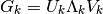
and let  , where
, where  and 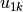 are
the largest singular value and the corresponding left singular vector
of
and 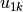 are
the largest singular value and the corresponding left singular vector
of  , respectively. It is easy to see
that
, respectively. It is easy to see
that  is has the largest power
among the signal distributions produced by unit dipoles at source
space location .
is has the largest power
among the signal distributions produced by unit dipoles at source
space location .
Furthermore, assume that the colums orthogonal matrix  (
( ) contain
the orthogonal basis of the noise subspace corresponding to the signal
space projection (SSP) operator
) contain
the orthogonal basis of the noise subspace corresponding to the signal
space projection (SSP) operator  specified
with one or more --proj options so that 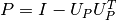.
For more information on SSP, see The Signal-Space Projection (SSP) method.
specified
with one or more --proj options so that 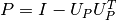.
For more information on SSP, see The Signal-Space Projection (SSP) method.
With these definitions the map selections defined with the --map option correspond to the following
—map 1
Computeat each source space point. Normalize the result so that the maximum values equals one.
—map 2
Computeat each source space point. Normalize the result so that the maximum values equals one. This is the amplitude of the signals produced by unit dipoles normal to the cortical surface.
—map 3
Compute 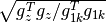 at each source space point.
—map 4
Computeat each source space point. This could be called the radiality index.
—map 5
Compute the subspace correlation betweenand
. This index equals zero, if
—map 6
Compute, which is the fraction of the field pattern of a dipole oriented perpendicular to the cortex at each cortical location remaining after applying the SSP a dipole remaining
mne_transform_points applies the coordinate transformation relating the MEG head coordinates and the MRI coordinates to a set of locations listed in a text file.
mne_transform_points accepts the following command-line options:
—version
Show the program version and compilation date.
—help
List the command-line options.
—in <*name*>
Specifies the input file. The file must contain three numbers on each line which are the x, y, and z coordinates of point in space. By default, the input is in millimeters.
—iso <*name*>
Specifies a name of a fif file containing Isotrak data. If this option is present file will be used as the input instead of the text file specified with the --in option.
—trans <*name*>
Specifies the name of a fif file containing the coordinate transformation between the MEG head coordinates and MRI coordinates. If this file is not present, the transformation will be replaced by a unit transform.
—out <*name*>
Specifies the output file. This file has the same format as the input file.
—hpts
Output the data in the head points (hpts) format accepted by tkmedit . In this format, the coordinates are preceded by a point category (hpi, cardinal or fiducial, eeg, extra) and a sequence number, see The hpts format.
—meters
The coordinates are listed in meters rather than millimeters.
—tomri
By default, the coordinates are transformed from MRI coordinates to MEG head coordinates. This option reverses the transformation to be from MEG head coordinates to MRI coordinates.
The utility mne_change_baselines computes baseline values and applies them to an evoked-response data file. The command-line options are:
—version
Show the program version and compilation date.
—help
List the command-line options.
—in <*name*>
Specifies the input data file.
—set <*number*>
The data set number to compute baselines from or to apply baselines to. If this option is omitted, all average data sets in the input file are processed.
—out <*name*>
The output file.
—baselines <*name*>
Specifies a text file which contains the baseline values to be applied. Each line should contain a channel name, colon, and the baseline value given in ‘native’ units (T/m, T, or V). If this option is encountered, the limits specified by previous --bmin and --bmax options will not have an effect.
—list <*name*>
Specifies a text file to contain the baseline values. Listing is provided only if a specific data set is selected with the --set option.
—bmin <*value/ms*>
Lower limit of the baseline. Effective only if --baselines option is not present. Both --bmin and --bmax must be present to compute the baseline values. If either --bmin or --bmax is encountered, previous --baselines option will be ignored.
—bmax <*value/ms*>
Upper limit of the baseline.
The utility mne_simu creates simulated evoked response data for investigation of the properties of the inverse solutions. It computes MEG signals generated by dipoles normal to the cortical mantle at one or several ROIs defined with label files. Colored noise can be added to the signals.
mne_simu has the following command-line options:
—version
Show the program version and compilation date.
—help
List the command-line options.
—fwd <*name*>
Specify a forward solution file to employ in the simulation.
—label <*name*>
Specify a label
—meg
Provide MEG data in the output file.
—eeg
Provide EEG data in the output file.
—out <*name*>
Specify the output file. By default, this will be an evoked data file in the fif format.
—raw
Output the data as a raw data fif file instead of an evoked one.
—mat
Produce Matlab output of the simulated fields instead of the fif evoked file.
—label <*name*>
Define an ROI. Several label files can be present. By default, the sources in the labels will have-shaped non-overlapping timecourses, see below.
—timecourse <*name*>
Specifies a text file which contains an expression for a source time course, see Source waveform expressions. If no –timecourse options are present, the standard source time courses described in Simulated data are used. Otherwise, the time course expressions are read from the files specified. The time course expressions are associated with the labels in the order they are specified. If the number of expressions is smaller than the number of labels, the last expression specified will reused for the remaining labels.
—sfreq <*freq/Hz*>
Specifies the sampling frequency of the output data (default = 1000 Hz). This option is used only with the time course files.
—tmin <*time/ms*>
Specifies the starting time of the data, used only with time course files (default -200 ms).
—tmax <*time/ms*>
Specifies the ending time of the data, used only with time course files (default 500 ms).
—seed <*number*>
Specifies the seed for random numbers. This seed is used both for adding noise, see Noise simulation and for random numbers in source waveform expressions, see Source waveform expressions. If no seed is specified, the current time in seconds since Epoch (January 1, 1970) is used.
—all
Activate all sources on the cortical surface uniformly. This overrides the --label options.
Noise is added to the signals if the --senscov and --nave options
are present. If --nave is omitted the number of averages
is set to  . The noise is computed
by first generating vectors of Gaussian random numbers
. The noise is computed
by first generating vectors of Gaussian random numbers  with
with  .
Thereafter, the noise-covariance matrix
.
Thereafter, the noise-covariance matrix  is
used to color the noise:
is
used to color the noise:
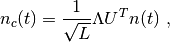
where we have used the eigenvalue decomposition positive-definite covariance matrix:

Note that it is assumed that the noise-covariance matrix
is given for raw data, i.e., for  .
.
The default source waveform  for
the 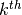 label is nonzero at times
for
the 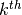 label is nonzero at times  ,
,  with:
with:

i.e., the source waveforms are non-overlapping 100-samples
wide pulses. The sampling frequency  Hz.
The source amplitude
Hz.
The source amplitude  is determined
so that the strength of each of the dipoles in a label will be
is determined
so that the strength of each of the dipoles in a label will be  .
.
Let us denote the sums of the magnetic fields and electric
potentials produced by the dipoles normal to the cortical mantle
at label by  . The simulated
signals are then:
. The simulated
signals are then:

where  is the number of
sources.
is the number of
sources.
The --timecourse option provides flexible possibilities to define the source waveforms in a functional form. The source waveform expression files consist of lines of the form:
<variable> = <arithmetic expression>
Each file may contain multiple lines. At the end of the evaluation, only the values in the variable y (q ) are significant, see Available variable names in source waveform expressions.. They assume the role of 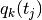 to compute the simulated signals as described in Simulated data, above.
All expressions are case insensitive. The variables are vectors with the length equal to the number of samples in the responses, determined by the --tmin , --tmax , and --sfreq options. The available variables are listed in Available variable names in source waveform expressions..
| Variable | Meaning |
|---|---|
| x | time [s] |
| t | current value of x in [ms] |
| y | the source amplitude [Am] |
| q | synonym for y |
| a , b , c , d | help variables, initialized to zeros |
The arithmetic expressions can use usual arithmetic operations as well as mathematical functions listed in Mathematical functions available for source waveform expressions. The arguments can be vectors or scalar numbers. In addition, standard relational operators ( <, >, ==, <=, >=) and their textual equivalents (lt, gt, eq, le, ge) are available. Table Examples of source waveform expressions. gives some useful examples of source waveform expressions.
| Function | Description |
| abs(x) | absolute value |
| acos(x) |  |
| asin(x) | 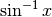 |
| atan(x) |  |
| atan2(x,y) |  |
| ceil(x) | nearest integer larger than  |
| cos(x) |  |
| cosw(x,a,b,c) | -shaped window centered at  with a
rising slope of length with a
rising slope of length  and a trailing slope of
length . and a trailing slope of
length . |
| deg(x) | The value of converted to from radians to degrees |
| erf(x) | 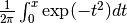 |
| erfc(x) |  |
| exp(x) |  |
| floor(x) | Largest integer value not larger than |
| hypot(x,y) |  |
| ln(x) |  |
| log(x) |  |
| maxp(x,y) | Takes the maximum between and  |
| minp(x,y) | Takes the minimum between and |
| mod(x,y) | Gives the remainder of divided by |
| pi | Ratio of the circumference of a circle and its diameter. |
| rand | Gives a vector of uniformly distributed random numbers from 0 to 1. |
| rnorm(x,y) | Gives a vector of Gaussian random numbers distributed as
 . Note that if and are
vectors, each number generated will a different mean and
variance according to the arguments. . Note that if and are
vectors, each number generated will a different mean and
variance according to the arguments. |
| shift(x,s) | Shifts the values in the input vector by the number
of positions given by  . Note that must be
a scalar. . Note that must be
a scalar. |
| sin(x) |  |
| sqr(x) |  |
| sqrt(x) |  |
| tan(x) |  |
| Expression | Meaning |
| q = 20e-9*sin(2*pi*10*x) | A 10-Hz sine wave with 20 nAm amplitude |
| q = 20e-9*sin(2*pi*2*x)*sin(2*pi*10*x) | A 10-Hz 20-nAm sine wave, amplitude modulated sinusoidally at 2 Hz. |
| q = 20e-9*cosw(t,100,100,100) | -shaped pulse, centered at  = 100 ms
with 100 ms leading and trailing slopes, 20 nAm amplitude = 100 ms
with 100 ms leading and trailing slopes, 20 nAm amplitude |
| q = 30e-9*(t > 0)*(t <* 300)*sin(2*pi*20*x) | 20-Hz sine wave, 30 nAm amplitude, cropped in time to 0...300 ms. |
The utility mne_annot2labels converts cortical parcellation data into a set of labels. The parcellation data are read from the directory $SUBJECTS_DIR/$SUBJECT/label and the resulting labels are written to the current directory. mne_annot2labels requires that the environment variable $SUBJECTS_DIR is set. The command line options for mne_annot2labels are:
—version
Show the program version and compilation date.
—help
List the command-line options.
—subject <*name*>
Specifies the name of the subject. If this option is not present the $SUBJECT environment variable is consulted. If the subject name cannot be determined, the program quits.
—parc <*name*>
Specifies the parcellation name to convert. The corresponding parcellation file names will be $SUBJECTS_DIR/$SUBJECT/label/ <hemi> h. <name> .annot where <hemi> is l or r for the left and right hemisphere, respectively.